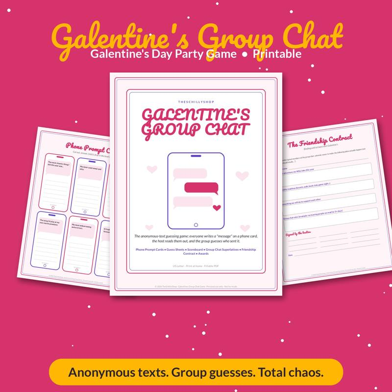
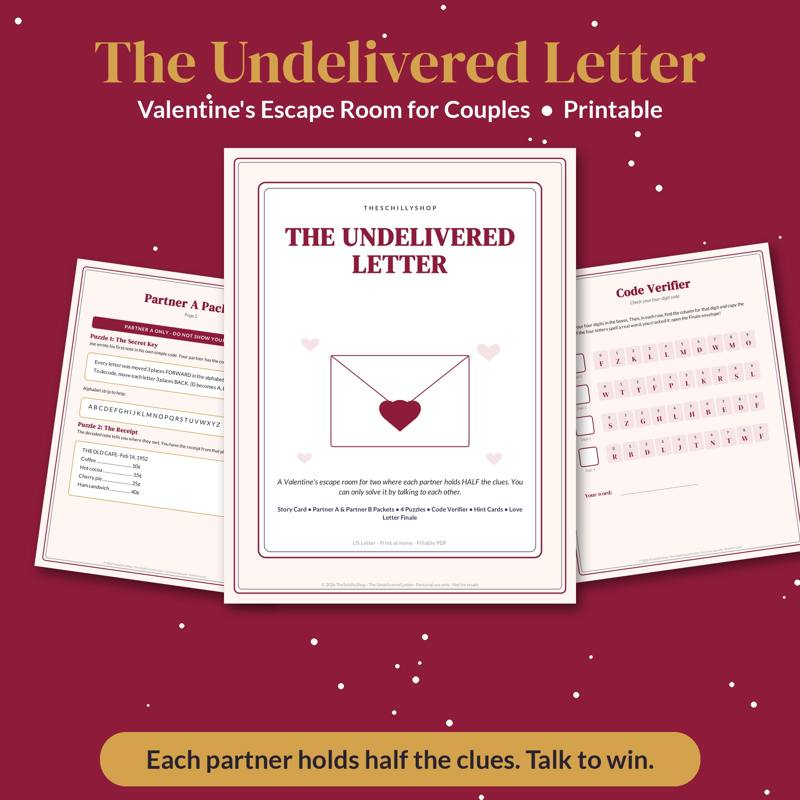

Galentine's Party Games Your Friends Will Actually Love
Galentine's Day is a celebration of friendship, usually held around mid-February. It's a chance to gather your favorite people, eat well and laugh a lot. A couple of good games turn a nice night into a great one, especially if your friends come from different parts of your life and don't all know each other yet.
Planning tips before the games
- Mix games with downtime. Galentine's should feel relaxed. Plan two or three games and leave plenty of time to talk.
- Pick games that celebrate friendship. The best games get people sharing stories and learning things about each other.
- Keep it inclusive. Avoid games that rely on inside jokes only half the group understands.
Icebreaker games
1. Friendship Bingo
Make bingo cards with squares like "has lived in another country," "can do a cartwheel," "has a hidden talent," "met the host at work." Guests mingle to find someone who matches each square. First to fill a row wins. Great for groups where not everyone knows each other.
2. How Do You Know the Host?
Each guest shares how they met the host — but with one invented detail. The group guesses which part was made up.
3. Compliment Circle
Sit in a circle. Each person gives the person to their right a specific, genuine compliment. It sounds cheesy, but it's one of the most memorable parts of many Galentine's parties.
Guessing games
4. Who Sent It?
Before the party, the host collects anonymous answers from each guest to prompts like "the worst date I've ever been on," "my most embarrassing autocorrect," or "the song I'd sing at karaoke." At the party, the host reads each answer aloud and everyone guesses who wrote it. This works beautifully because it reveals funny secrets in a low-pressure way.
Our Galentine's Group Chat party game turns this format into a printable game styled like an anonymous group chat, with prompt cards, guessing sheets and scoring — easy to run without prep work.
5. Baby Photo Match
Ask guests to send a baby or childhood photo ahead of time. Print or display them, numbered, and have everyone match photos to friends.
6. Friendship Trivia
Write trivia about the friend group: where you went on that one trip, who once got lost in the airport, whose favorite food is what. Play in teams.
Creative games and activities
7. Love Letter to a Friend
Provide cards or stationery. Each guest writes a short note to another friend (assign names randomly or let them choose). Notes are read privately or kept as keepsakes.
8. Vision Board Night
Bring magazines, scissors, glue sticks and poster board. Everyone makes a vision board for the year. A nice low-key activity for a cozy night in.
9. Craft Fail Challenge
Pick a simple craft or cake decorating project. Everyone attempts it with no instructions beyond a photo. Vote on the best and worst results.
10. Blind Taste Test
Wine, chocolate, chips or salsa — have guests taste and rank different options blind. Reveal the brands at the end. Price differences make it extra fun.
Party games for bigger groups
11. Galentine's Charades
Use categories like rom-com movies, iconic friendships and love songs. Play in two teams with a one-minute timer.
12. Never Have I Ever (Friendly Edition)
Keep it fun and light with prompts focused on silly mishaps rather than anything too personal. Use fingers or candy to keep score.
13. Superlatives
Before the party, create superlatives — "Most likely to plan the group trip," "Most likely to cry at a commercial," "Best at giving advice." Guests vote, and winners get a little certificate or prize.
Food and drink ideas
- A charcuterie or "dessert board" with chocolates, berries and cookies
- A make-your-own cocktail or mocktail bar
- Heart-shaped pizza or sandwiches
- Pink lemonade or sparkling water with fruit
Favors
- Mini candles or lip balms
- A small succulent
- A photo strip from a DIY photo booth
- A handwritten note from the host
Hosting checklist
- Invitations sent two weeks ahead
- Anonymous prompts collected (if playing Who Sent It?)
- Games printed and supplies gathered
- Snacks and drinks ready
- Playlist queued
- Favors packed
Galentine's for couples, too?
If you're also planning something for Valentine's Day itself, our guide to a Valentine's escape room for couples at home is a fun date-night idea, and our Undelivered Letter escape room is a ready-to-print version.
The best Galentine's parties celebrate the friends who show up for each other all year long. A couple of games, good food and plenty of time to talk is all you need. Planning a bridal shower for one of those friends? Read our guide to bridal shower games that aren't cringe.

Guess-who-sent-it party game styled like an anonymous group chat.
See it on Payhip
Shop the printables mentioned
Galentine's Group Chat Party Game
Guess-who-sent-it party game styled like an anonymous group chat.
View on Payhip
The Undelivered Letter: Valentine's Escape Room for Couples
A printable at-home escape room for two, built around a mysterious lost love letter.
View on PayhipMore guides
- Baby Shower Prediction Game Ideas (and How to Run Them)
- Bridal Shower Games That Aren't Cringe
- Chili Cook-Off Rules and Scoring: A Complete Host Guide
- Christmas Party Games for Adults (No Supplies Needed)
- Cookie Exchange Party Ideas: How to Host a Christmas Cookie Swap
- A Family Chore System That Actually Works
- The Meal Planning Game: How to Get Your Family to Help Plan Dinners
- New Year's Eve Family Traditions Kids Will Love
- Snow Day Activities for Kids: 30 Ideas Indoors and Out
- Teacher Gift Ideas From the Whole Class (Thoughtful and Budget-Friendly)
- Thanksgiving Kids Table Activities That Keep Them Busy
- Ugly Sweater Contest Ideas: Categories, Judging and Fun Twists
- Vacation Rental Cleaning Checklist: Room-by-Room Turnover Guide
- Valentine's Escape Room for Couples at Home: How to Set One Up